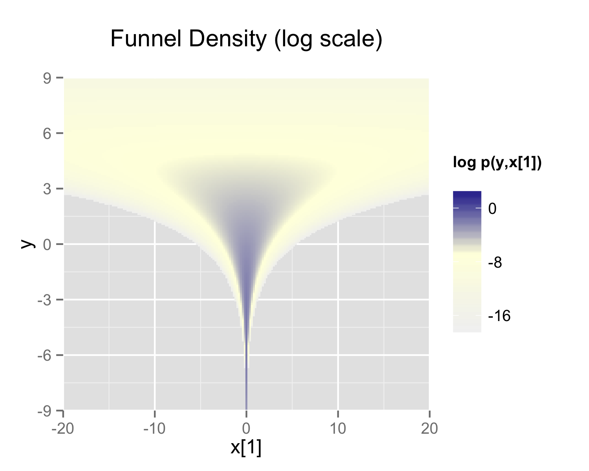
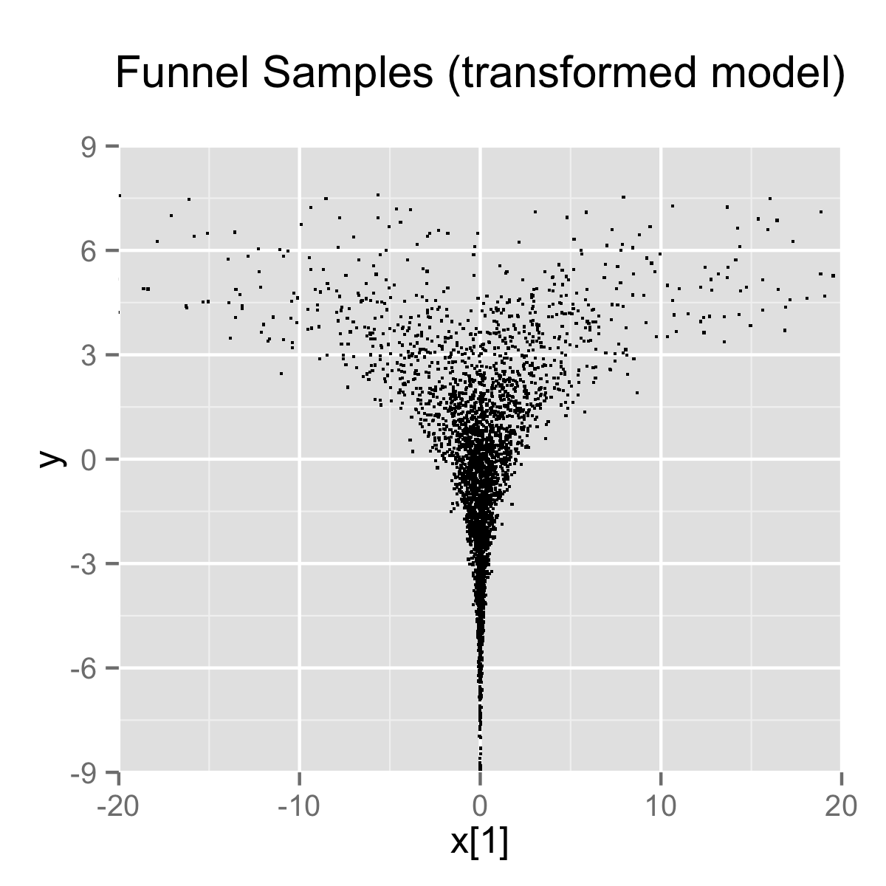

Efficiency Tuning
This chapter provides a grab bag of techniques for optimizing Stan code, including vectorization, sufficient statistics, and conjugacy. At a coarse level, efficiency involves both the amount of time required for a computation and the amount of memory required. For practical applied statistical modeling, we are mainly concerned with reducing wall time (how long a program takes as measured by a clock on the wall) and keeping memory requirements within available bounds.
What is efficiency?
The standard algorithm analyses in computer science measure efficiency asymptotically as a function of problem size (such as data, number of parameters, etc.) and typically do not consider constant additive factors like startup times or multiplicative factors like speed of operations. In practice, the constant factors are important; if run time can be cut in half or more, that’s a huge gain. This chapter focuses on both the constant factors involved in efficiency (such as using built-in matrix operations as opposed to naive loops) and on asymptotic efficiency factors (such as using linear algorithms instead of quadratic algorithms in loops).
Efficiency for probabilistic models and algorithms
Stan programs express models which are intrinsically statistical in nature. The algorithms applied to these models may or may not themselves be probabilistic. For example, given an initial value for parameters (which may itself be given deterministically or generated randomly), Stan’s optimization algorithm (L-BFGS) for penalized maximum likelihood estimation is purely deterministic. Stan’s sampling algorithms are based on Markov chain Monte Carlo algorithms, which are probabilistic by nature at every step. Stan’s variational inference algorithm (ADVI) is probabilistic despite being an optimization algorithm; the randomization lies in a nested Monte Carlo calculation for an expected gradient.
With probabilistic algorithms, there will be variation in run times (and maybe memory usage) based on the randomization involved. For example, by starting too far out in the tail, iterative algorithms underneath the hood, such as the solvers for ordinary differential equations, may take different numbers of steps. Ideally this variation will be limited; when there is a lot of variation it can be a sign that there is a problem with the model’s parameterization in a Stan program or with initialization.
A well-behaved Stan program will have low variance between runs with different random initializations and differently seeded random number generators. But sometimes an algorithm can get stuck in one part of the posterior, typically due to high curvature. Such sticking almost always indicates the need to reparameterize the model. Just throwing away Markov chains with apparently poor behavior (slow, or stuck) can lead to bias in posterior estimates. This problem with getting stuck can often be overcome by lowering the initial step size to avoid getting stuck during adaptation and increasing the target acceptance rate in order to target a lower step size. This is because smaller step sizes allow Stan’s gradient-based algorithms to better follow the curvature in the density or penalized maximum likelihood being fit.
Statistical vs. computational efficiency
There is a difference between pure computational efficiency and statistical efficiency for Stan programs fit with sampling-based algorithms. Computational efficiency measures the amount of time or memory required for a given step in a calculation, such as an evaluation of a log posterior or penalized likelihood.
Statistical efficiency typically involves requiring fewer steps in algorithms by making the statistical formulation of a model better behaved. The typical way to do this is by applying a change of variables (i.e., reparameterization) so that sampling algorithms mix better or optimization algorithms require less adaptation.
Model conditioning and curvature
Because Stan’s algorithms rely on step-based gradient-based approximations of the density (or penalized maximum likelihood) being fitted, posterior curvature not captured by this first-order approximation plays a central role in determining the statistical efficiency of Stan’s algorithms.
A second-order approximation to curvature is provided by the Hessian, the matrix of second derivatives of the log density \(\log p(\theta)\) with respect to the parameter vector \(\theta\), defined as \[ H(\theta) = \nabla \, \nabla \, \log p(\theta \mid y), \] so that \[ H_{i, j}(\theta) = \frac{\partial^2 \log p(\theta \mid y)} {\partial \theta_i \ \partial \theta_j}. \] For pure penalized maximum likelihood problems, the posterior log density \(\log p(\theta \mid y)\) is replaced by the penalized likelihood function \(\mathcal{L}(\theta) = \log p(y \mid \theta) - \lambda(\theta)\).
Condition number and adaptation
A good gauge of how difficult a problem the curvature presents is given by the condition number of the Hessian matrix \(H\), which is the ratio of the largest to the smallest eigenvalue of \(H\) (assuming the Hessian is positive definite). This essentially measures the difference between the flattest direction of movement and the most curved. Typically, the step size of a gradient-based algorithm is bounded by the most sharply curved direction. With better conditioned log densities or penalized likelihood functions, it is easier for Stan’s adaptation, especially the diagonal adaptations that are used as defaults.
Unit scales without correlation
Ideally, all parameters should be programmed so that they have unit scale and so that posterior correlation is reduced; together, these properties mean that there is no rotation or scaling required for optimal performance of Stan’s algorithms. For Hamiltonian Monte Carlo, this implies a unit mass matrix, which requires no adaptation as it is where the algorithm initializes.
Varying curvature
In all but very simple models (such as multivariate normals), the Hessian will vary as \(\theta\) varies (an extreme example is Neal’s funnel, as naturally arises in hierarchical models with little or no data). The more the curvature varies, the harder it is for all of the algorithms with fixed adaptation parameters to find adaptations that cover the entire density well. Many of the variable transforms proposed are aimed at improving the conditioning of the Hessian and/or making it more consistent across the relevant portions of the density (or penalized maximum likelihood function) being fit.
For all of Stan’s algorithms, the curvature along the path from the initial values of the parameters to the solution is relevant. For penalized maximum likelihood and variational inference, the solution of the iterative algorithm will be a single point, so this is all that matters. For sampling, the relevant “solution” is the typical set, which is the posterior volume where almost all draws from the posterior lies; thus, the typical set contains almost all of the posterior probability mass.
With sampling, the curvature may vary dramatically between the points on the path from the initialization point to the typical set and within the typical set. This is why adaptation needs to run long enough to visit enough points in the typical set to get a good first-order estimate of the curvature within the typical set. If adaptation is not run long enough, sampling within the typical set after adaptation will not be efficient. We generally recommend at least one hundred iterations after the typical set is reached (and the first effective draw is ready to be realized). Whether adaptation has run long enough can be measured by comparing the adaptation parameters derived from a set of diffuse initial parameter values.
Reparameterizing with a change of variables
Improving statistical efficiency is achieved by reparameterizing the model so that the same result may be calculated using a density or penalized maximum likelihood that is better conditioned. Again, see the example of reparameterizing Neal’s funnel for an example, and also the examples in the change of variables chapter.
One has to be careful in using change-of-variables reparameterizations when using maximum likelihood estimation, because they can change the result if the Jacobian term is inadvertently included in the revised likelihood model.
Well-specified models
Model misspecification, which roughly speaking means using a model that doesn’t match the data, can be a major source of slow code. This can be seen in cases where simulated data according to the model runs robustly and efficiently, whereas the real data for which it was intended runs slowly or may even have convergence and mixing issues. While some of the techniques recommended in the remaining sections of this chapter may mitigate the problem, the best remedy is a better model specification.
Counterintuitively, more complicated models often run faster than simpler models. One common pattern is with a group of parameters with a wide fixed prior such as normal(0, 1000)). This can fit slowly due to the mismatch between prior and posterior (the prior has support for values in the hundreds or even thousands, whereas the posterior may be concentrated near zero). In such cases, replacing the fixed prior with a hierarchical prior such as normal(mu, sigma), where mu and sigma are new parameters with their own hyperpriors, can be beneficial.
Avoiding validation
Stan validates all of its data structure constraints. For example, consider a transformed parameter defined to be a covariance matrix and then used as a covariance parameter in the model block.
transformed parameters {
cov_matrix[K] Sigma;
// ...
} // first validation
model {
y ~ multi_normal(mu, Sigma); // second validation
// ...
}Because Sigma is declared to be a covariance matrix, it will be factored at the end of the transformed parameter block to ensure that it is positive definite. The multivariate normal log density function also validates that Sigma is positive definite. This test is expensive, having cubic run time (i.e., \(\mathcal{O}(N^3)\) for \(N \times N\) matrices), so it should not be done twice.
The test may be avoided by simply declaring Sigma to be a simple unconstrained matrix.
transformed parameters {
matrix[K, K] Sigma;
// ...
}
model {
y ~ multi_normal(mu, Sigma); // only validation
}Now the only validation is carried out by the multivariate normal.
Reparameterization
Stan’s sampler can be slow in sampling from distributions with difficult posterior geometries. One way to speed up such models is through reparameterization. In some cases, reparameterization can dramatically increase effective sample size for the same number of iterations or even make programs that would not converge well behaved.
Example: Neal’s funnel
In this section, we discuss a general transform from a centered to a non-centered parameterization (Papaspiliopoulos, Roberts, and Sköld 2007).1
This reparameterization is helpful when there is not much data, because it separates the hierarchical parameters and lower-level parameters in the prior.
Neal (2003) defines a distribution that exemplifies the difficulties of sampling from some hierarchical models. Neal’s example is fairly extreme, but can be trivially reparameterized in such a way as to make sampling straightforward. Neal’s example has support for \(y \in \mathbb{R}\) and \(x \in \mathbb{R}^9\) with density
\[ p(y,x) = \textsf{normal}(y \mid 0,3) \times \prod_{n=1}^9 \textsf{normal}(x_n \mid 0,\exp(y/2)). \]
The probability contours are shaped like ten-dimensional funnels. The funnel’s neck is particularly sharp because of the exponential function applied to \(y\). A plot of the log marginal density of \(y\) and the first dimension \(x_1\) is shown in the following plot.
The marginal density of Neal’s funnel for the upper-level variable \(y\) and one lower-level variable \(x_1\) (see the text for the formula). The blue region has log density greater than -8, the yellow region density greater than -16, and the gray background a density less than -16.

The funnel can be implemented directly in Stan as follows.
parameters {
real y;
vector[9] x;
}
model {
y ~ normal(0, 3);
x ~ normal(0, exp(y/2));
}When the model is expressed this way, Stan has trouble sampling from the neck of the funnel, where \(y\) is small and thus \(x\) is constrained to be near 0. This is due to the fact that the density’s scale changes with \(y\), so that a step size that works well in the body will be too large for the neck, and a step size that works in the neck will be inefficient in the body. This can be seen in the following plot.
4000 draws are taken from a run of Stan’s sampler with default settings. Both plots are restricted to the shown window of \(x_1\) and \(y\) values; some draws fell outside of the displayed area as would be expected given the density. The samples are consistent with the marginal density \(p(y) = \textsf{normal}(y \mid 0,3)\), which has mean 0 and standard deviation 3.

In this particular instance, because the analytic form of the density from which samples are drawn is known, the model can be converted to the following more efficient form.
parameters {
real y_raw;
vector[9] x_raw;
}
transformed parameters {
real y;
vector[9] x;
y = 3.0 * y_raw;
x = exp(y/2) * x_raw;
}
model {
y_raw ~ std_normal(); // implies y ~ normal(0, 3)
x_raw ~ std_normal(); // implies x ~ normal(0, exp(y/2))
}In this second model, the parameters x_raw and y_raw are sampled as independent standard normals, which is easy for Stan. These are then transformed into samples from the funnel. In this case, the same transform may be used to define Monte Carlo samples directly based on independent standard normal samples; Markov chain Monte Carlo methods are not necessary. If such a reparameterization were used in Stan code, it is useful to provide a comment indicating what the distribution for the parameter implies for the distribution of the transformed parameter.
Reparameterizing the Cauchy
Sampling from heavy tailed distributions such as the Cauchy is difficult for Hamiltonian Monte Carlo, which operates within a Euclidean geometry.
The practical problem is that tail of the Cauchy requires a relatively large step size compared to the trunk. With a small step size, the No-U-Turn sampler requires many steps when starting in the tail of the distribution; with a large step size, there will be too much rejection in the central portion of the distribution. This problem may be mitigated by defining the Cauchy-distributed variable as the transform of a uniformly distributed variable using the Cauchy inverse cumulative distribution function.
Suppose a random variable of interest \(X\) has a Cauchy distribution with location \(\mu\) and scale \(\tau\), so that \(X \sim \textsf{Cauchy}(\mu,\tau)\). The variable \(X\) has a cumulative distribution function \(F_X:\mathbb{R} \rightarrow (0,1)\) defined by \[ F_X(x) = \frac{1}{\pi} \arctan \left( \frac{x - \mu}{\tau} \right) + \frac{1}{2}. \] The inverse of the cumulative distribution function, \(F_X^{-1}:(0,1) \rightarrow \mathbb{R}\), is thus
\[ F^{-1}_X(y) = \mu + \tau \tan \left( \pi \left( y - \frac{1}{2} \right) \right). \] Thus if the random variable \(Y\) has a unit uniform distribution, \(Y \sim \textsf{uniform}(0,1)\), then \(F^{-1}_X(Y)\) has a Cauchy distribution with location \(\mu\) and scale \(\tau\), i.e., \(F^{-1}_X(Y) \sim \textsf{Cauchy}(\mu,\tau)\).
Consider a Stan program involving a Cauchy-distributed parameter beta.
parameters {
real beta;
// ...
}
model {
beta ~ cauchy(mu, tau);
// ...
}This declaration of beta as a parameter may be replaced with a transformed parameter beta defined in terms of a uniform-distributed parameter beta_unif.
parameters {
real<lower=-pi() / 2, upper=pi() / 2> beta_unif;
// ...
}
transformed parameters {
real beta;
beta = mu + tau * tan(beta_unif); // beta ~ cauchy(mu, tau)
}
model {
beta_unif ~ uniform(-pi() / 2, pi() / 2); // not necessary
// ...
}It is more convenient in Stan to transform a uniform variable on \((-\pi/2, \pi/2)\) than one on \((0,1)\). The Cauchy location and scale parameters, mu and tau, may be defined as data or may themselves be parameters. The variable beta could also be defined as a local variable if it does not need to be included in the sampler’s output.
The uniform distribution on beta_unif is defined explicitly in the model block, but it could be safely removed from the program without changing sampling behavior. This is because \(\log
\textsf{uniform}(\beta_{\textsf{unif}} \mid -\pi/2,\pi/2) =
-\log \pi\) is a constant and Stan only needs the total log probability up to an additive constant. Stan will spend some time checking that that beta_unif is between -pi() / 2 and pi() / 2, but this condition is guaranteed by the constraints in the declaration of beta_unif.
Reparameterizing a Student-t distribution
One thing that sometimes works when you’re having trouble with the heavy-tailedness of Student-t distributions is to use the gamma-mixture representation, which says that you can generate a Student-t distributed variable \(\beta\), \[ \beta \sim \textsf{Student-t}(\nu, 0, 1), \] by first generating a gamma-distributed precision (inverse variance) \(\tau\) according to \[ \tau \sim \textsf{Gamma}(\nu/2, \nu/2), \] and then generating \(\beta\) from the normal distribution, \[ \beta \sim \textsf{normal}\left(0,\tau^{-\frac{1}{2}}\right). \]
Because \(\tau\) is precision, \(\tau^{-\frac{1}{2}}\) is the scale (standard deviation), which is the parameterization used by Stan.
The marginal distribution of \(\beta\) when you integrate out \(\tau\) is \(\textsf{Student-t}(\nu, 0, 1)\), i.e., \[ \textsf{Student-t}(\beta \mid \nu, 0, 1) = \int_0^{\infty} \, \textsf{normal}\left(\beta \middle| 0, \tau^{-0.5}\right) \times \textsf{Gamma}\left(\tau \middle| \nu/2, \nu/2\right) \ \text{d} \tau. \]
To go one step further, instead of defining a \(\beta\) drawn from a normal with precision \(\tau\), define \(\alpha\) to be drawn from a unit normal, \[ \alpha \sim \textsf{normal}(0,1) \] and rescale by defining \[ \beta = \alpha \, \tau^{-\frac{1}{2}}. \]
Now suppose \(\mu = \beta x\) is the product of \(\beta\) with a regression predictor \(x\). Then the reparameterization \(\mu = \alpha \tau^{-\frac{1}{2}} x\) has the same distribution, but in the original, direct parameterization, \(\beta\) has (potentially) heavy tails, whereas in the second, neither \(\tau\) nor \(\alpha\) have heavy tails.
To translate into Stan notation, this reparameterization replaces
parameters {
real<lower=0> nu;
real beta;
// ...
}
model {
beta ~ student_t(nu, 0, 1);
// ...
}with
parameters {
real<lower=0> nu;
real<lower=0> tau;
real alpha;
// ...
}
transformed parameters {
real beta;
beta = alpha / sqrt(tau);
// ...
}
model {
real half_nu;
half_nu = 0.5 * nu;
tau ~ gamma(half_nu, half_nu);
alpha ~ std_normal();
// ...
}Although set to 0 here, in most cases, the lower bound for the degrees of freedom parameter nu can be set to 1 or higher; when nu is 1, the result is a Cauchy distribution with fat tails and as nu approaches infinity, the Student-t distribution approaches a normal distribution. Thus the parameter nu characterizes the heaviness of the tails of the model.
Hierarchical models and the non-centered parameterization
Unfortunately, the usual situation in applied Bayesian modeling involves complex geometries and interactions that are not known analytically. Nevertheless, the non-centered parameterization can still be effective for separating parameters.
Centered parameterization
For example, a vectorized hierarchical model might draw a vector of coefficients \(\beta\) with definitions as follows. The so-called centered parameterization is as follows.
parameters {
real mu_beta;
real<lower=0> sigma_beta;
vector[K] beta;
// ...
}
model {
beta ~ normal(mu_beta, sigma_beta);
// ...
}Although not shown, a full model will have priors on both mu_beta and sigma_beta along with data modeled based on these coefficients. For instance, a standard binary logistic regression with data matrix x and binary outcome vector y would include a likelihood statement such as form y ~ bernoulli_logit(x * beta), leading to an analytically intractable posterior.
A hierarchical model such as the above will suffer from the same kind of inefficiencies as Neal’s funnel, because the values of beta, mu_beta and sigma_beta are highly correlated in the posterior. The extremity of the correlation depends on the amount of data, with Neal’s funnel being the extreme with no data. In these cases, the non-centered parameterization, discussed in the next section, is preferable; when there is a lot of data, the centered parameterization is more efficient. See Betancourt and Girolami (2013) for more information on the effects of centering in hierarchical models fit with Hamiltonian Monte Carlo.
Non-centered parameterization
Sometimes the group-level effects do not constrain the hierarchical distribution tightly. Examples arise when there are not many groups, or when the inter-group variation is high. In such cases, hierarchical models can be made much more efficient by shifting the data’s correlation with the parameters to the hyperparameters. Similar to the funnel example, this will be much more efficient in terms of effective sample size when there is not much data (see Betancourt and Girolami (2013)), and in more extreme cases will be necessary to achieve convergence.
parameters {
real mu_beta;
real<lower=0> sigma_beta;
vector[K] beta_raw;
// ...
}
transformed parameters {
vector[K] beta;
// implies: beta ~ normal(mu_beta, sigma_beta)
beta = mu_beta + sigma_beta * beta_raw;
}
model {
beta_raw ~ std_normal();
// ...
}Any priors defined for mu_beta and sigma_beta remain as defined in the original model.
Alternatively, Stan’s affine transform can be used to decouple sigma and beta:
parameters {
real mu_beta;
real<lower=0> sigma_beta;
vector<offset=mu_beta, multiplier=sigma_beta>[K] beta;
// ...
}
model {
beta ~ normal(mu_beta, sigma_beta);
// ...
}Reparameterization of hierarchical models is not limited to the normal distribution, although the normal distribution is the best candidate for doing so. In general, any distribution of parameters in the location-scale family is a good candidate for reparameterization. Let \(\beta = l + s\alpha\) where \(l\) is a location parameter and \(s\) is a scale parameter. The parameter \(l\) need not be the mean, \(s\) need not be the standard deviation, and neither the mean nor the standard deviation need to exist. If \(\alpha\) and \(\beta\) are from the same distributional family but \(\alpha\) has location zero and unit scale, while \(\beta\) has location \(l\) and scale \(s\), then that distribution is a location-scale distribution. Thus, if \(\alpha\) were a parameter and \(\beta\) were a transformed parameter, then a prior distribution from the location-scale family on \(\alpha\) with location zero and unit scale implies a prior distribution on \(\beta\) with location \(l\) and scale \(s\). Doing so would reduce the dependence between \(\alpha\), \(l\), and \(s\).
There are several univariate distributions in the location-scale family, such as the Student t distribution, including its special cases of the Cauchy distribution (with one degree of freedom) and the normal distribution (with infinite degrees of freedom). As shown above, if \(\alpha\) is distributed standard normal, then \(\beta\) is distributed normal with mean \(\mu = l\) and standard deviation \(\sigma = s\). The logistic, the double exponential, the generalized extreme value distributions, and the stable distribution are also in the location-scale family.
Also, if \(z\) is distributed standard normal, then \(z^2\) is distributed chi-squared with one degree of freedom. By summing the squares of \(K\) independent standard normal variates, one can obtain a single variate that is distributed chi-squared with \(K\) degrees of freedom. However, for large \(K\), the computational gains of this reparameterization may be overwhelmed by the computational cost of specifying \(K\) primitive parameters just to obtain one transformed parameter to use in a model.
Multivariate reparameterizations
The benefits of reparameterization are not limited to univariate distributions. A parameter with a multivariate normal prior distribution is also an excellent candidate for reparameterization. Suppose you intend the prior for \(\beta\) to be multivariate normal with mean vector \(\mu\) and covariance matrix \(\Sigma\). Such a belief is reflected by the following code.
data {
int<lower=2> K;
vector[K] mu;
cov_matrix[K] Sigma;
// ...
}
parameters {
vector[K] beta;
// ...
}
model {
beta ~ multi_normal(mu, Sigma);
// ...
}In this case mu and Sigma are fixed data, but they could be unknown parameters, in which case their priors would be unaffected by a reparameterization of beta.
If \(\alpha\) has the same dimensions as \(\beta\) but the elements of \(\alpha\) are independently and identically distributed standard normal such that \(\beta = \mu + L\alpha\), where \(LL^\top = \Sigma\), then \(\beta\) is distributed multivariate normal with mean vector \(\mu\) and covariance matrix \(\Sigma\). One choice for \(L\) is the Cholesky factor of \(\Sigma\). Thus, the model above could be reparameterized as follows.
data {
int<lower=2> K;
vector[K] mu;
cov_matrix[K] Sigma;
// ...
}
transformed data {
matrix[K, K] L;
L = cholesky_decompose(Sigma);
}
parameters {
vector[K] alpha;
// ...
}
transformed parameters {
vector[K] beta;
beta = mu + L * alpha;
}
model {
alpha ~ std_normal();
// implies: beta ~ multi_normal(mu, Sigma)
// ...
}This reparameterization is more efficient for two reasons. First, it reduces dependence among the elements of alpha and second, it avoids the need to invert Sigma every time multi_normal is evaluated.
The Cholesky factor is also useful when a covariance matrix is decomposed into a correlation matrix that is multiplied from both sides by a diagonal matrix of standard deviations, where either the standard deviations or the correlations are unknown parameters. The Cholesky factor of the covariance matrix is equal to the product of a diagonal matrix of standard deviations and the Cholesky factor of the correlation matrix. Furthermore, the product of a diagonal matrix of standard deviations and a vector is equal to the elementwise product between the standard deviations and that vector. Thus, if for example the correlation matrix Tau were fixed data but the vector of standard deviations sigma were unknown parameters, then a reparameterization of beta in terms of alpha could be implemented as follows.
data {
int<lower=2> K;
vector[K] mu;
corr_matrix[K] Tau;
// ...
}
transformed data {
matrix[K, K] L;
L = cholesky_decompose(Tau);
}
parameters {
vector[K] alpha;
vector<lower=0>[K] sigma;
// ...
}
transformed parameters {
vector[K] beta;
// This equals mu + diag_matrix(sigma) * L * alpha;
beta = mu + sigma .* (L * alpha);
}
model {
sigma ~ cauchy(0, 5);
alpha ~ std_normal();
// implies: beta ~ multi_normal(mu,
// diag_matrix(sigma) * L * L' * diag_matrix(sigma)))
// ...
}This reparameterization of a multivariate normal distribution in terms of standard normal variates can be extended to other multivariate distributions that can be conceptualized as contaminations of the multivariate normal, such as the multivariate Student t and the skew multivariate normal distribution.
A Wishart distribution can also be reparameterized in terms of standard normal variates and chi-squared variates. Let \(L\) be the Cholesky factor of a \(K \times K\) positive definite scale matrix \(S\) and let \(\nu\) be the degrees of freedom. If \[ A = \begin{pmatrix} \sqrt{c_{1}} & 0 & \cdots & 0 \\ z_{21} & \sqrt{c_{2}} & \ddots & \vdots \\ \vdots & \ddots & \ddots & 0 \\ z_{K1} & \cdots & z_{K\left(K-1\right)} & \sqrt{c_{K}} \end{pmatrix}, \] where each \(c_i\) is distributed chi-squared with \(\nu - i + 1\) degrees of freedom and each \(z_{ij}\) is distributed standard normal, then \(W = LAA^{\top}L^{\top}\) is distributed Wishart with scale matrix \(S = LL^{\top}\) and degrees of freedom \(\nu\). Such a reparameterization can be implemented by the following Stan code:
data {
int<lower=1> N;
int<lower=1> K;
int<lower=K + 2> nu
matrix[K, K] L; // Cholesky factor of scale matrix
vector[K] mu;
matrix[N, K] y;
// ...
}
parameters {
vector<lower=0>[K] c;
vector[0.5 * K * (K - 1)] z;
// ...
}
model {
matrix[K, K] A;
int count = 1;
for (j in 1:(K - 1)) {
for (i in (j + 1):K) {
A[i, j] = z[count];
count += 1;
}
for (i in 1:(j - 1)) {
A[i, j] = 0.0;
}
A[j, j] = sqrt(c[j]);
}
for (i in 1:(K - 1)) {
A[i, K] = 0;
}
A[K, K] = sqrt(c[K]);
for (i in 1:K) {
c[i] ~ chi_square(nu - i + 1);
}
z ~ std_normal();
// implies: L * A * A' * L' ~ wishart(nu, L * L')
y ~ multi_normal_cholesky(mu, L * A);
// ...
}This reparameterization is more efficient for three reasons. First, it reduces dependence among the elements of z and second, it avoids the need to invert the covariance matrix, \(W\) every time wishart is evaluated. Third, if \(W\) is to be used with a multivariate normal distribution, you can pass \(L A\) to the more efficient multi_normal_cholesky function, rather than passing \(W\) to multi_normal.
If \(W\) is distributed Wishart with scale matrix \(S\) and degrees of freedom \(\nu\), then \(W^{-1}\) is distributed inverse Wishart with inverse scale matrix \(S^{-1}\) and degrees of freedom \(\nu\). Thus, the previous result can be used to reparameterize the inverse Wishart distribution. Since \(W = L A A^{\top} L^{\top}\), \(W^{-1} = L^{{\top}^{-1}} A^{{\top}^{-1}} A^{-1} L^{-1}\), where all four inverses exist, but \(L^{{-1}^{\top}} = L^{{\top}^{-1}}\) and \(A^{{-1}^{\top}} = A^{{\top}^{-1}}\). We can slightly modify the above Stan code for this case:
data {
int<lower=1> K;
int<lower=K + 2> nu
matrix[K, K] L; // Cholesky factor of scale matrix
// ...
}
transformed data {
matrix[K, K] eye;
matrix[K, K] L_inv;
for (j in 1:K) {
for (i in 1:K) {
eye[i, j] = 0.0;
}
eye[j, j] = 1.0;
}
L_inv = mdivide_left_tri_low(L, eye);
}
parameters {
vector<lower=0>[K] c;
vector[0.5 * K * (K - 1)] z;
// ...
}
model {
matrix[K, K] A;
matrix[K, K] A_inv_L_inv;
int count;
count = 1;
for (j in 1:(K - 1)) {
for (i in (j + 1):K) {
A[i, j] = z[count];
count += 1;
}
for (i in 1:(j - 1)) {
A[i, j] = 0.0;
}
A[j, j] = sqrt(c[j]);
}
for (i in 1:(K - 1)) {
A[i, K] = 0;
}
A[K, K] = sqrt(c[K]);
A_inv_L_inv = mdivide_left_tri_low(A, L_inv);
for (i in 1:K) {
c[i] ~ chi_square(nu - i + 1);
}
z ~ std_normal(); // implies: crossprod(A_inv_L_inv) ~
// inv_wishart(nu, L_inv' * L_inv)
// ...
}Another candidate for reparameterization is the Dirichlet distribution with all \(K\) shape parameters equal. Zyczkowski and Sommers (2001) shows that if \(\theta_i\) is equal to the sum of \(\beta\) independent squared standard normal variates and \(\rho_i = \frac{\theta_i}{\sum \theta_i}\), then the \(K\)-vector \(\rho\) is distributed Dirichlet with all shape parameters equal to \(\frac{\beta}{2}\). In particular, if \(\beta = 2\), then \(\rho\) is uniformly distributed on the unit simplex. Thus, we can make \(\rho\) be a transformed parameter to reduce dependence, as in:
data {
int<lower=1> beta;
// ...
}
parameters {
array[K] vector[beta] z;
// ...
}
transformed parameters {
simplex[K] rho;
for (k in 1:K) {
rho[k] = dot_self(z[k]); // sum-of-squares
}
rho = rho / sum(rho);
}
model {
for (k in 1:K) {
z[k] ~ std_normal();
}
// implies: rho ~ dirichlet(0.5 * beta * ones)
// ...
}Vectorization
Gradient bottleneck
Stan spends the vast majority of its time computing the gradient of the log probability function, making gradients the obvious target for optimization. Stan’s gradient calculations with algorithmic differentiation require a template expression to be allocated and constructed for each subexpression of a Stan program involving parameters or transformed parameters.2 This section defines optimization strategies based on vectorizing these subexpressions to reduce the work done during algorithmic differentiation.
Vectorizing summations
Because of the gradient bottleneck described in the previous section, it is more efficient to collect a sequence of summands into a vector or array and then apply the sum() operation than it is to continually increment a variable by assignment and addition. For example, consider the following code snippet, where foo() is some operation that depends on n.
for (n in 1:N) {
total += foo(n,...);
}This code has to create intermediate representations for each of the N summands.
A faster alternative is to copy the values into a vector, then apply the sum() operator, as in the following refactoring.
{
vector[N] summands;
for (n in 1:N) {
summands[n] = foo(n,...);
}
total = sum(summands);
}Syntactically, the replacement is a statement block delineated by curly brackets ({, }), starting with the definition of the local variable summands.
Even though it involves extra work to allocate the summands vector and copy N values into it, the savings in differentiation more than make up for it. Perhaps surprisingly, it will also use substantially less memory overall than incrementing total within the loop.
Vectorization through matrix operations
The following program directly encodes a linear regression with fixed unit noise using a two-dimensional array x of predictors, an array y of outcomes, and an array beta of regression coefficients.
data {
int<lower=1> K;
int<lower=1> N;
array[K, N] real x;
array[N] real y;
}
parameters {
array[K] real beta;
}
model {
for (n in 1:N) {
real gamma = 0;
for (k in 1:K) {
gamma += x[n, k] * beta[k];
}
y[n] ~ normal(gamma, 1);
}
}The following model computes the same log probability function as the previous model, even supporting the same input files for data and initialization.
data {
int<lower=1> K;
int<lower=1> N;
array[N] vector[K] x;
array[N] real y;
}
parameters {
vector[K] beta;
}
model {
for (n in 1:N) {
y[n] ~ normal(dot_product(x[n], beta), 1);
}
}Although it produces equivalent results, the dot product should not be replaced with a transpose and multiply, as in
y[n] ~ normal(x[n]' * beta, 1);The relative inefficiency of the transpose and multiply approach is that the transposition operator allocates a new vector into which the result of the transposition is copied. This consumes both time and memory.3
The inefficiency of transposition could itself be mitigated by reordering the product and pulling the transposition out of the loop, as follows.
// ...
transformed parameters {
row_vector[K] beta_t;
beta_t = beta';
}
model {
for (n in 1:N) {
y[n] ~ normal(beta_t * x[n], 1);
}
}The problem with transposition could be completely solved by directly encoding the x as a row vector, as in the following example.
data {
// ...
array[N] row_vector[K] x;
// ...
}
parameters {
vector[K] beta;
}
model {
for (n in 1:N) {
y[n] ~ normal(x[n] * beta, 1);
}
}Declaring the data as a matrix and then computing all the predictors at once using matrix multiplication is more efficient still, as in the example discussed in the next section.
Having said all this, the most efficient way to code this model is with direct matrix multiplication, as in
data {
matrix[N, K] x;
vector[N] y;
}
parameters {
vector[K] beta;
}
model {
y ~ normal(x * beta, 1);
}In general, encapsulated single operations that do the work of loops will be more efficient in their encapsulated forms. Rather than performing a sequence of row-vector/vector multiplications, it is better to encapsulate it as a single matrix/vector multiplication.
Vectorized probability functions
The final and most efficient version replaces the loops and transformed parameters by using the vectorized form of the normal probability function, as in the following example.
data {
int<lower=1> K;
int<lower=1> N;
matrix[N, K] x;
vector[N] y;
}
parameters {
vector[K] beta;
}
model {
y ~ normal(x * beta, 1);
}The variables are all declared as either matrix or vector types. The result of the matrix-vector multiplication x * beta in the model block is a vector of the same length as y.
The probability function documentation in the function reference manual indicates which of Stan’s probability functions support vectorization; see the function reference manual for full details. Vectorized probability functions accept either vector or scalar inputs for all arguments, with the only restriction being that all vector arguments are the same dimensionality. In the example above, y is a vector of size N, x * beta is a vector of size N, and 1 is a scalar.
Reshaping data for vectorization
Sometimes data does not arrive in a shape that is ideal for vectorization, but can be put into such shape with some munging (either inside Stan’s transformed data block or outside).
John Hall provided a simple example on the Stan users group. Simplifying notation a bit, the original model had a sampling statement in a loop, as follows.
for (n in 1:N) {
y[n] ~ normal(mu[ii[n]], sigma);
}The brute force vectorization would build up a mean vector and then vectorize all at once.
{
vector[N] mu_ii;
for (n in 1:N) {
mu_ii[n] = mu[ii[n]];
}
y ~ normal(mu_ii, sigma);
}If there aren’t many levels (values ii[n] can take), then it behooves us to reorganize the data by group in a case like this. Rather than having a single observation vector y, there are K of them. And because Stan doesn’t support ragged arrays, it means K declarations. For instance, with 5 levels, we have
y_1 ~ normal(mu[1], sigma);
// ...
y_5 ~ normal(mu[5], sigma);This way, both the mu and sigma parameters are shared. Which way works out to be more efficient will depend on the shape of the data; if the sizes are small, the simple vectorization may be faster, but for moderate to large sized groups, the full expansion should be faster.
Exploiting sufficient statistics
In some cases, models can be recoded to exploit sufficient statistics in estimation. This can lead to large efficiency gains compared to an expanded model. This section provides examples for Bernoulli and normal distributions, but the same approach can be applied to other members of the exponential family.
Bernoulli sufficient statistics
Consider the following Bernoulli sampling model.
data {
int<lower=0> N;
array[N] int<lower=0, upper=1> y;
real<lower=0> alpha;
real<lower=0> beta;
}
parameters {
real<lower=0, upper=1> theta;
}
model {
theta ~ beta(alpha, beta);
for (n in 1:N) {
y[n] ~ bernoulli(theta);
}
}In this model, the sum of positive outcomes in y is a sufficient statistic for the chance of success theta. The model may be recoded using the binomial distribution as follows.
theta ~ beta(alpha, beta);
sum(y) ~ binomial(N, theta);Because truth is represented as one and falsehood as zero, the sum sum(y) of a binary vector y is equal to the number of positive outcomes out of a total of N trials.
This can be generalized to other discrete cases (one wouldn’t expect continuous observations to be duplicated if they are random). Suppose there are only \(K\) possible discrete outcomes, \(z_1, \dotsc, z_K\), but there are \(N\) observations, where \(N\) is much larger than \(K\). If \(f_k\) is the frequency of outcome \(z_k\), then the entire likelihood with distribution foo can be coded as follows.
for (k in 1:K) {
target += f[k] * foo_lpmf(z[k] | ...);
}where the ellipses are the parameters of the log probability mass function for distribution foo (there’s no distribution called “foo”; this is just a placeholder for any discrete distribution name).
The resulting program looks like a “weighted” regression, but here the weights f[k] are counts and thus sufficient statistics for the PMF and simply amount to an alternative, more efficient coding of the same likelihood. For efficiency, the frequencies f[k] should be counted once in the transformed data block and stored.
The same trick works for combining multiple binomial observations.
Normal sufficient statistics
Consider the following Stan model for fitting a normal distribution to data.
data {
int N;
vector[N] y;
}
parameters {
real mu;
real<lower=0> sigma;
}
model {
y ~ normal(mu, sigma);
}With the vectorized form used for y, Stan is clever enough to only evaluate log(sigma) once, but it still has to evaluate the normal for all of y[1] to y[N], which involves adding up all the squared differences from the mean and then dividing by sigma squared.
An equivalent density to the one above (up to normalizing constants that do not depend on parameters), is given in the following Stan program.
data {
int N;
vector[N] y;
}
transformed data {
real mean_y = mean(y);
real<lower=0> var_y = variance(y);
real nm1_over2 = 0.5 * (N - 1);
real sqrt_N = sqrt(N);
}
parameters {
real mu;
real<lower=0> sigma;
}
model {
mean_y ~ normal(mu, sigma / sqrt_N);
var_y ~ gamma(nm1_over2, nm1_over2 / sigma^2);
}The data and parameters are the same in this program as in the first. The second version adds a transformed data block to compute the mean and variance of the data, which are the sufficient statistics here. These are stored along with two other useful constants. Then the program can define distributions over the mean and variance, both of which are scalars here.
The original Stan program and this one define the same model in the sense that they define the same log density up to a constant additive term that does not depend on the parameters. The priors on mu and sigma are both improper, but proper priors could be added as additional statements in the model block without affecting the sufficiency.
This transform explicitly relies on aggregating the data. Using this trick on parameters leads to more computation than just computing the normal log density, even before accounting for the non-linear change of variables in the variance.
Poisson sufficient statistics
The Poisson distribution is the easiest case, because the sum of observations is sufficient. Specifically, we can replace
y ~ poisson(lambda);with
sum(y) ~ poisson(size(y) * lambda);This will work even if y is a parameter vector because no Jacobian adjustment is required for summation.
Aggregating common subexpressions
If an expression is calculated once, the value should be saved and reused wherever possible. That is, rather than using exp(theta) in multiple places, declare a local variable to store its value and reuse the local variable.
Another case that may not be so obvious is with two multilevel parameters, say a[ii[n]] + b[jj[n]]. If a and b are small (i.e., do not have many levels), then a table a_b of their sums can be created, with
matrix[size(a), size(b)] a_b;
for (i in 1:size(a)) {
for (j in 1:size(b)) {
a_b[i, j] = a[i] + b[j];
}
}Then the sum can be replaced with a_b[ii[n], jj[n]].
Exploiting conjugacy
Continuing the model from the previous section, the conjugacy of the beta prior and binomial distribution allow the model to be further optimized to the following equivalent form.
theta ~ beta(alpha + sum(y), beta + N - sum(y));To make the model even more efficient, a transformed data variable defined to be sum(y) could be used in the place of sum(y).
Standardizing predictors
Standardizing the data so that all predictors have a zero sample mean and unit sample variance has the following potential benefits:
- It helps in faster convergence of MCMC chains.
- It makes the model less sensitive to the specifics of the parameterization.
- It aids in the interpretation and comparison of the importance of coefficients across different predictors.
When there are large differences between the units and scales of the predictors, standardizing the predictors is especially useful. This section illustrates the principle for a simple linear regression.
Suppose that \(y = (y_1,\dotsc,y_N)\) is a vector of \(N\) outcomes and \(x = (x_1,\dotsc,x_N)\) the corresponding vector of \(N\) predictors. A simple linear regression involving an intercept coefficient \(\alpha\) and slope coefficient \(\beta\) can be expressed as \[ y_n = \alpha + \beta x_n + \epsilon_n, \] where \[ \epsilon_n \sim \textsf{normal}(0,\sigma). \]
If \(x\) has very large or very small values or if the mean of the values is far away from 0 (on the scale of the values), then it can be more efficient to standardize the predictor values \(x_n\). First the elements of \(x\) are zero-centered by subtracting the mean, then scaled by dividing by the standard deviation.
The mean of \(x\) is given by:
\[ mean_x = \frac{1}{N} \sum_{n=1}^{N} x_n \]
The standard deviation of \(x\) is calculated as: \[ sd_x = {\left({\frac{1}{N} \sum_{n=1}^{N} (x_n - mean_x)^2}\right)}^{1/2} \]
With these, we compute the \(z\), the standardized predictors
\[ z_n = \frac{x_n - mean_x}{sd_x} \]
where \(z_n\) is the standardized value corresponding to \(x_n\).
The inverse transform is defined by reversing the two normalization steps, first rescaling by the same deviation and relocating by the sample mean.
\[ x_n = z_n sd_x + mean_x \]
Standardizing the predictors standardizes the scale of the variables, and hence the scale of the priors.
Consider the following initial model.
data {
int<lower=0> N;
vector[N] y;
vector[N] x;
}
parameters {
real alpha;
real beta;
real<lower=0> sigma;
}
model {
// priors
alpha ~ normal(0, 10);
beta ~ normal(0, 10);
sigma ~ normal(0, 5);
// likelihood
y ~ normal(x * beta + alpha, sigma);
}The data block for the standardized model is identical. The mean and standard deviation of the data are defined in the transformed data block, along with the standardized predictors.
data {
int<lower=0> N;
vector[N] y;
vector[N] x;
}
transformed data {
real mean_x = mean(x);
real sd_x = sd(x);
vector[N] x_std = (x - mean_x) / sd_x;
}
parameters {
real alpha_std;
real beta_std;
real<lower=0> sigma_std;
}
model {
alpha_std ~ normal(0, 10);
beta_std ~ normal(0, 10);
sigma_std ~ normal(0, 5);
y ~ normal(x_std * beta_std + alpha_std, sigma_std);
}The parameters are renamed to indicate that they aren’t the “natural” parameters. The transformed data x_std is defined in terms of variables mean_x and sd_x; by declaring these variables in the transformed data block, they will be available in all following blocks, and therefore can be used in the generated quantities block to record the “natural” parameters alpha and beta.
The fairly diffuse priors on the coefficients are the same. These could have been transformed as well, but here they are left as is, because the scales make sense as diffuse priors for standardized data.
The original regression \[ y_n = \alpha + \beta x_n + \epsilon_n \] has been transformed to a regression on the standardized data variable \(z\),
\[ y_n = \alpha' + \beta' z_n + \epsilon_n. \]
The likelihood is specified in terms of the standardized parameters. The original slope \(\beta\) is the standardized slope \(\beta'\) scaled by the inverse of the standard deviation of \(x\). The original intercept \(\alpha\) is the intercept from the standardized model \(\alpha'\), corrected for the effect of scaling and centering \(x\). Thus, the formulas to retrieve \(\alpha\) and \(\beta\) from \(\alpha'\) and \(\beta'\) are:
\[\begin{align*} \beta = \frac{\beta'}{\sigma_x} \\ \alpha = \alpha' - \beta' \frac{\mu_x}{\sigma_x} \end{align*}\]
These recovered parameter values on the original scales can be calculated within Stan using a generated quantities block following the model block,
generated quantities {
real beta = beta_std / sd_x;
real alpha = alpha_std - beta_std * mean_x / sd_x;
}When there are multiple real-valued predictors, i.e., when K is the number of predictors, x is an \(N \times K\) matrix, and beta ia \(K\)-vector of coefficients, then x * beta is an \(N\)-vector of predictions, one for each of the \(N\) data items. When \(K \ll N\) the QR reparameterization is recommended for linear and generalized linear models unless there is an informative prior on the location of \(\beta\).
Standard normal distribution
For many applications on the standard scale, normal distributions with location zero and scale one will be used. In these cases, it is more efficient to use
y ~ std_normal();than to use
y ~ normal(0, 1);because the subtraction of the location and division by the scale cancel, as does subtracting the log of the scale.
Using map-reduce
The map-reduce operation, even without multi-core MPI support, can be used to make programs more scalable and also more efficient. See the map-reduce chapter for more information on implementing map-reduce operations.
Map-reduce allows greater scalability because only the Jacobian of the mapped function for each shard is stored. The Jacobian consists of all of the derivatives of the outputs with respect to the parameters. During execution, the derivatives of the shard are evaluated using nested automatic differentiation. As often happens with modern CPUs, reduced memory overhead leads to increased memory locality and faster execution. The Jacobians are all computed with local memory and their outputs stored contiguously in memory.
References
Footnotes
This parameterization came to be known on our mailing lists as the “Matt trick” after Matt Hoffman, who independently came up with it while fitting hierarchical models in Stan.↩︎
Stan uses its own arena-based allocation, so allocation and deallocation are faster than with a raw call to
new.↩︎Future versions of Stan may remove this inefficiency by more fully exploiting expression templates inside the Eigen C++ matrix library. This will require enhancing Eigen to deal with mixed-type arguments, such as the type
doubleused for constants and the algorithmic differentiation typestan::math::varused for variables.↩︎